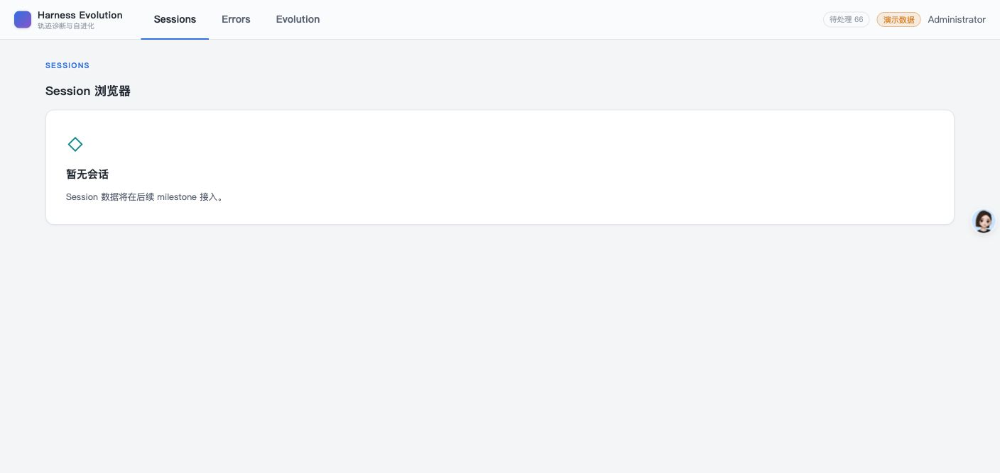
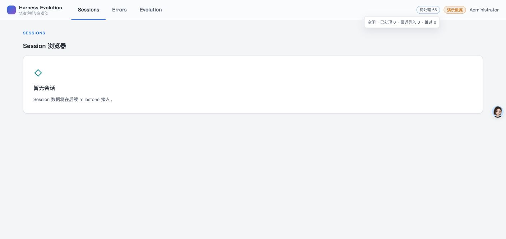
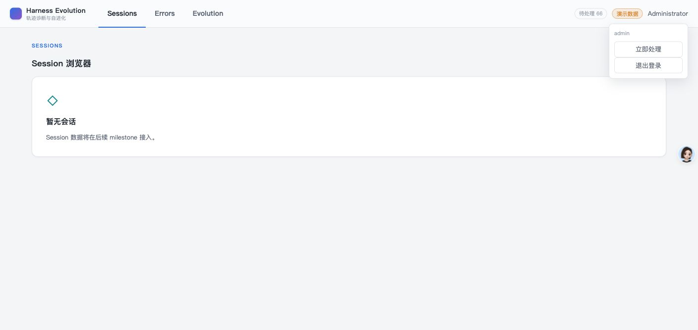
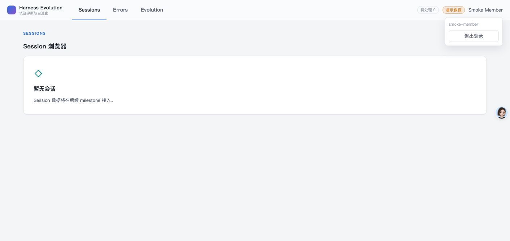
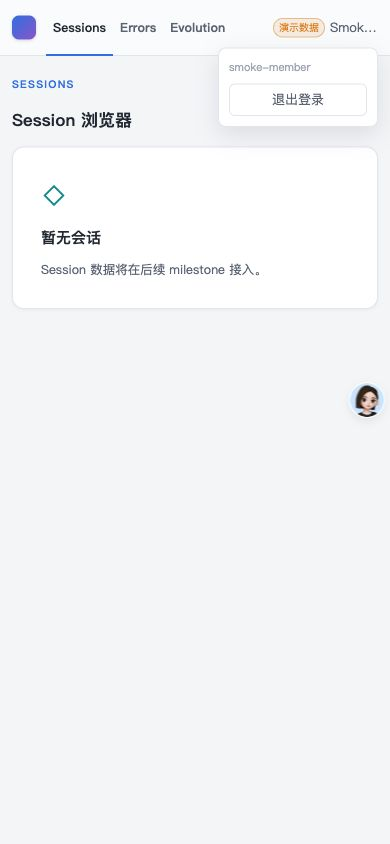
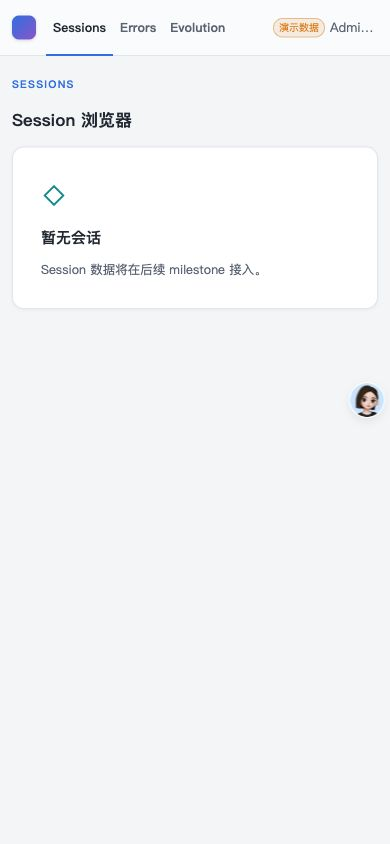
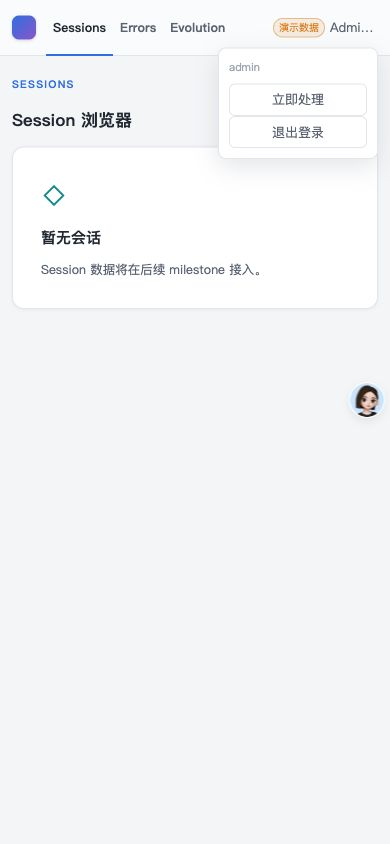

- Issue
- #39 · M2 sync scheduler
- PR
- #98
- Head
- f4a804d
- Runtime
- FastAPI + Vite + Chrome
- Database
- 临时 SQLite
- Scheduler
- 自动 interval 关闭，管理员手动触发
Harness Evolution · PR #98
M2-07 同步调度器集成冒烟报告
在真实 FastAPI、临时 SQLite、Vite 与 Chrome 上验证同步 pending 状态、管理员立即处理、member 权限、无待处理 idle、390px 原型布局和审计闭环；并发与恢复细节由 focused 测试补齐。
12冒烟场景
12通过
0缺陷
16调度器测试
Environment and Artifact
2026-10-26 · macOS · Chrome · 127.0.0.1Scenario Matrix
12 pass| # | 场景 | 结果 | 观测 | 证据 |
|---|---|---|---|---|
| 01 | 导入后 pending 状态 | PASS | 导入 66 个 agent payload 后，顶栏显示“待处理 66”，未创建 job。 | screenshots/01-pending-admin.png SQLite payloads=66 |
| 02 | pending 详情可读 | PASS | 点击状态摘要后显示空闲、已处理、最近导入和跳过数量。 | screenshots/02-pending-detail.png aria-label 含同源摘要 |
| 03 | 管理员立即处理入口 | PASS | admin 用户菜单出现“立即处理”，沿用亮色原型顶栏。 | screenshots/03-admin-menu.png |
| 04 | 处理中状态 | PASS | 点击后按钮变为“处理中…”，禁用重复触发。 | screenshots/04-processing.png |
| 05 | 同步完成与审计 | PASS | 完成后待处理为 0、已处理 66、导入 66；job completed，sync run completed，sync lock 已释放。 | screenshots/05-completed.png jobs=1, locks=0, sync_runs=1 |
| 06 | member 无管理操作 | PASS | 临时 member 登录后仍可见 pending 摘要，但菜单没有“立即处理”。 | screenshots/06-member-menu.png |
| 07 | 390px member 布局 | PASS | 390px 隐藏辅助 pending 摘要，用户菜单保留；scrollWidth=clientWidth=390。 | screenshots/07-member-390.png |
| 08 | 无 pending 显式 idle | PASS | 无待处理时管理员再次点击只刷新状态，不创建伪 job，状态仍为 idle。 | screenshots/08-idle-admin.png jobs count remains 1 |
| 09 | 390px 管理员布局 | PASS | 辅助摘要隐藏，管理员菜单保留且完全位于视口内。 | screenshots/09-admin-390.png screenshots/10-admin-390-menu.png |
| 10 | single-flight 与权限 | PASS | focused 测试验证并发 trigger 只创建一个 job/lock，manual 401/403/202 边界正确。 | 16 focused scheduler tests passed |
| 11 | 重启与失败审计 | PASS | recovery 先 adoption 再 dispatch；失败、取消与重启均终结对应 sync run 并释放匹配锁。 | restart/failure/cancel focused tests |
| 12 | 控制台与安全边界 | PASS | 真实 Chrome warning/error/exception 为 0；status 错误使用闭集文案，不返回 token 或本地路径。 | Chrome dev logs=[] sanitization focused tests |
Issues and Observations
No defects foundNo defects were found.
Evidence
10 screenshots







Automated Coverage Assessment
4 areas reviewed| 区域 | 覆盖 | 结论 | 建议 |
|---|---|---|---|
| 调度与单飞 | 真实 UI + focused tests | 手动/调度共享 trigger；并发只产生一个 job/lock；无 pending 不建 job。 | 保留 SQLite/MySQL trigger contract 与真实 UI 冒烟。 |
| 恢复与审计 | focused tests | 重启先 adoption；失败、取消和重启都会终结 sync run 并释放锁。 | 继续覆盖进程级 crash 与更长 TTL 窗口。 |
| 顶栏 UI | 真实 Chrome | pending 摘要、详情、admin 操作、member 隐藏和 390px 布局符合原型。 | 领域 Session 页面仍由后续 issue 按原型实现。 |
| 安全 | focused tests + browser | 状态错误已闭集化，浏览器无 warning/error；无 SSE 或原始轨迹泄漏。 | 后续日志采集继续只接收稳定错误码。 |
Conclusion
通过同步调度器与顶栏状态在真实进程和亮色原型 UI 中完整工作，未发现集成缺陷。
- 真实 pending→manual sync→completed 全链路通过。
- member 无管理入口，390px 无溢出。
- 并发、重启、失败与审计由 focused 测试补齐。
证据源：Computer Use 截图、SQLite 运行态、16 项调度器测试与 Chrome 日志；HTML 由 JSON 生成，不应手改。